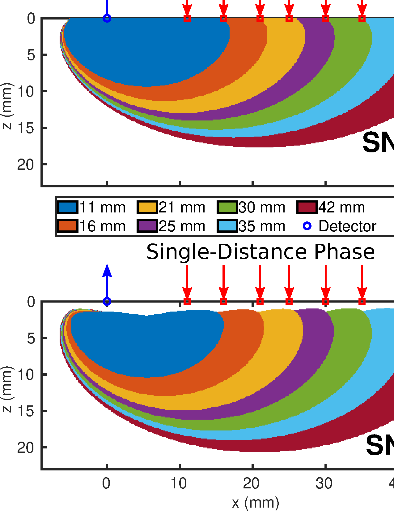
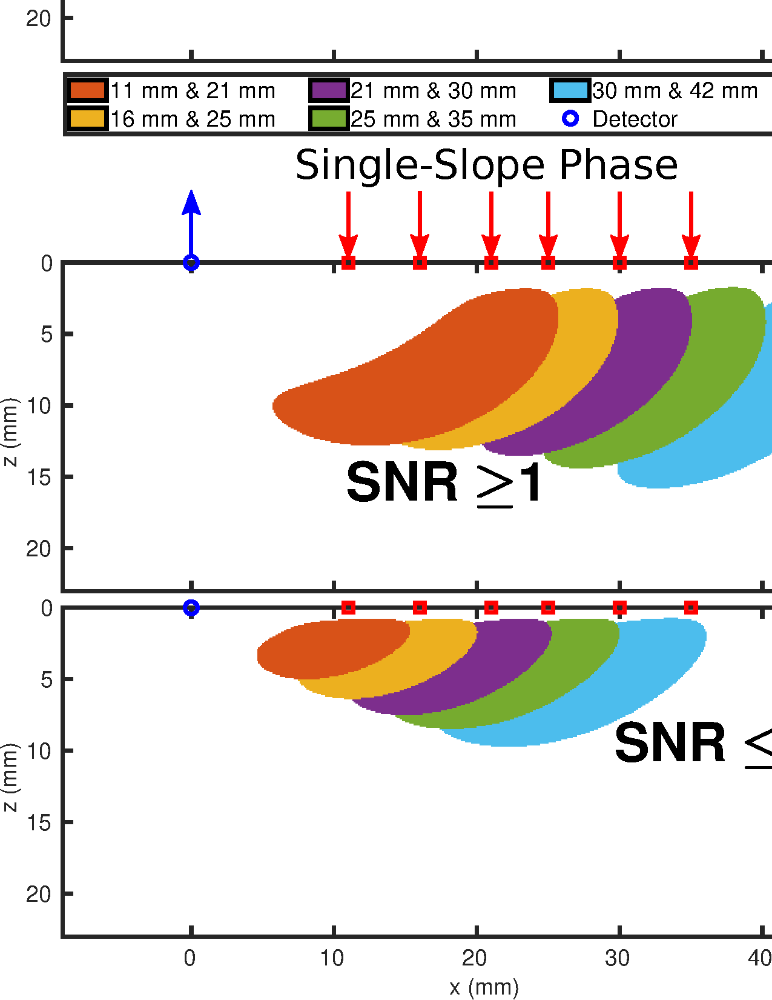
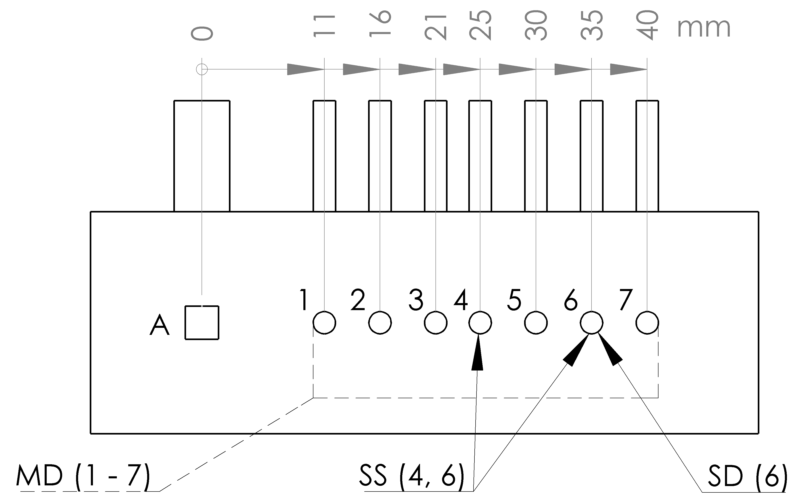
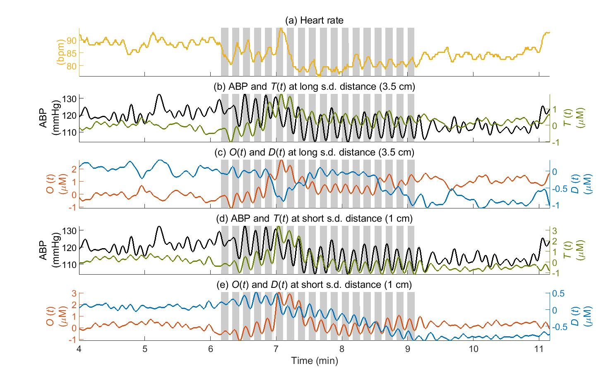
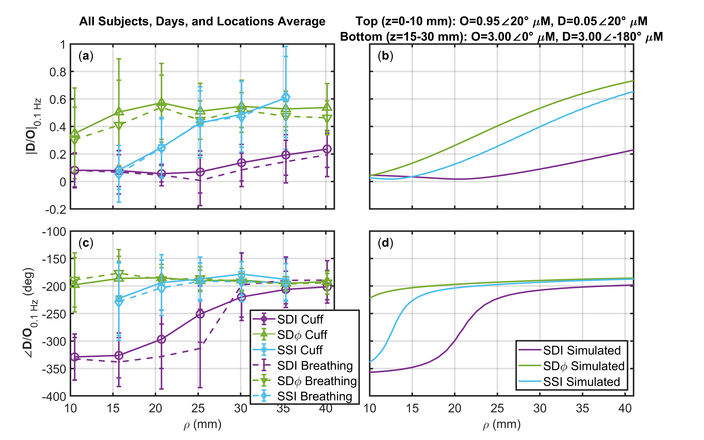

Short versus Long Source-Detector Distances
Short versus Long Source-Detector Distances
Sensitivity Profiles
One of the most basic methods for probing deeper in a diffuse medium with NIRS is to use longer ρ. This is based on the idea that longer ρs are sensitive to deeper parts of the medium. If we focus on measurement of Δμa, we can produce 𝒮 maps as those shown in . The methods for doing this are shown in Appendix [app:senMaps]. Essentially 𝒮 may be interpreted using the following expression: \[\mathcal{S}_i\left(\vec{r}_j\right)= \frac{\left[\Delta\mu_a_{,apparent}\right]_i} {\Delta\mu_a_{,actual}\left(\vec{r}_j\right)} \label{equ:sen_dmua}\] which, shows the 𝒮 of measurement \(i\) which measures an apparent absorption change of \(\left[\Delta\mu_a_{,apparent}\right]_i\) when there is an actual absorption change of \(\Delta\mu_a_{,actual}\) at position \(\vec{r}_j\). 𝒮 has the property that when it is spatially summed over the who medium the result is one,1 meaning the measurement would measure the actual Δμa if the change occurred everywhere.
We may go one step further when considering these 𝒮 maps by considering the size of the Δμa perturbation both in terms of volume and amplitude and the instrumental noise. By doing so the 𝒮 maps can be converted to SNR maps. Methods for doing this are explained in and Appendix [app:senMaps]. Using the SNR maps, one may choose to create Boolean maps showing where the SNR is greater than one. These are the maps shown in this chapter to represent where within a medium a given measurement can measure a given absorption change considering instrumental noise.
The specific parameters used to simulate a semi-infinite homogeneous medium were a μa of 0.01 mm, μ′s of 1.2 mm and n of 1.4. The perturbation was considered to be a Δμa of 0.003 mm and size 10 × 10 × 2 mm. Instrumental parameters included a fmod of 140.625 MHz, I noise of 0.4 %, and φ noise of 0.06°. These parameter values are used in various of our 𝒮 maps and simulations both in this chapter and subsequent chapters.
Single-Distance Sensitivity

Note 1: Simulation parameters stated in Section 1.1.
Note 2: Simulation methods in Appendix [app:senMaps].
SD measurements obtain changes in either the I or φ between a single source and single detector. These changes can then be converted to apparent Δμa using the DPF method as shown in and Appendix [app:dmuaMeas].
Figure 1.1 shows maps of where the SNR is greater than or equal to 1 from the 𝒮 and parameters in Section 1.1. These maps show the profiles for both SDI and SDφ with ρs of 11 mm, 16 mm, 21 mm, 25 mm, 30 mm, 35 mm, & 40 mm. This choice of distances was chosen to be the same as the ones for the probe used in and . This probe is shown in Figure 1.3.
In general, these maps confirm that the typical statements that longer ρs and time-resolved measurements such as φ probe deeper. One practical limitation should be mentioned in that, at longer ρ, noise is expected to increase; however this ρ dependent noise was not considered in these maps to make visualization easier. For this reason there is a point of diminishing returns at longer ρ which the maps do not express.
Single-Slope Sensitivity

Note 1: Simulation parameters stated in Section 1.1.
Note 2: Simulation methods in Appendix [app:senMaps].
Now moving to SS measurements, we consider either I or φ measured at more than one ρ to produce one measurement of Δμa. SS measures the changes in the slope of either ln(ρ²I) or φ versus ρ. These changes are then converted to Δμa using the DSF method described in and Appendix [app:dmuaMeas].
Figure 1.2 shows regions where the absolute SNR is greater than or equal to 1 for SS data-types. Again the probe from and Figure 1.3 was considered and slopes were created from SD pairs whose ρs differed by approximately 10 mm. 𝒮 for SS becomes more complex compared to SD since significant portions of the map become negative. The reason for this is the subtraction used to calculate slopes. The physical meaning of negative 𝒮 is the possibility of measuring the opposite sign Δμa than the actual. This should be considered an artifact. To visualize this Figure 1.2 shows two maps for each of the two data-types SS I and SS φ. The SNR less than or equal to negative 1 map corresponds to the negative 𝒮 region.
Overall SS measurements are considered a slight improvement over SD since they effectively subtract measurements from short ρ from the signal. However, as seen in the maps this can induce artifacts by creating a significant negative 𝒮 region. However, if the Δμa within the medium is layered, then SS has a significant advantage over SD since the negative and positive superficial 𝒮 regions mostly cancel (Figure [fig:DSsenSDSSDSsenCurve]) leaving a signal representative of the deep region.
Multi-Distance Measurement on the Human Brain
Motivated by the expected 𝒮 profiles shown in Figures 1.1&1.2 measurements of cerebral hemodynamics were conducted using many ρs in and . The detailed physiological interpretation of those results will be discussed in Part [prt:cereHemo]. Here we will discuss how these works demonstrate the difference between long and short ρ.
Methods Used in Multi-Distance Work
Summary of Experimental Parameters

A and the sources labeled
1 to 7. The full MD set is shown including
sources 1 to 7 with source-detector distance (ρ) of
11 mm, 16 mm, 21 mm, 25 mm, 30 mm, 35 mm, & 40 mm. An example Single-Slope (SS) set
using sources 4 & and an example Single-Distance (SD) set
with set source 6 is also shown.Note 1: This can be found as Figure 1(b) in .
Note 2: This probe was utilized in and
Data were collected from 6 healthy human subjects, 3 females and 3 males in . Experiments were repeated 10 times on each subject, except Subject 2 for whom measurements were repeated 5 times. presented only 1 of these measurement sessions and excluded 1 male subject, while presented all data. FD NIRS data was collected using an Imagent with a fmod of 140.625 MHz and λs of 690 nm, & 830 nm. 2 optical probes were used (only 1 presented in ), each featuring one detector fiber bundle and seven pairs of source bundles, with ρs of 11 mm, 16 mm, 21 mm, 25 mm, 30 mm, 35 mm, & 40 mm (Figure 1.3). The 2 optical probes were placed on the right and left sides of the subject’s forehead.2 During the experiment ABP oscillations were induced at 0.1 Hz using either thigh cuff inflation (Figures 1.4,[fig:PHTfig2],&[fig:JBPfig1]) or paced breathing (Figure [fig:PHTfig2]). The duration of these oscillations were 3 min in either case. These oscillations will be discussed in more detail in Part [prt:cereHemo]. The full experiment lasted 15 min.
Analysis Overview
The baseline μa and μ′s were measured using calibrated MD measurements and the linear slopes method in Appendix [app:absOptPropMeas]. Then using these absolute properties the methods in Appendix [app:dmuaMeas] were used to retrieve temporal traces of Δμa which where converted to ΔO and ΔD using the methods in Appendix [app:recChrom]. Finally, CHS analysis (discussed in Part [prt:cereHemo]) was achieved using methods in Appendices [app:phasors]&[app:detCoh]. For the purposes of this chapter the output of this analysis was D̃/Õ, or the transfer function between O and D at the oscillation frequency of 0.1 Hz.
To investigate the different 𝒮 to different regions in tissue, which may have different actual hemodynamic oscillations, data exhibiting these heterogeneities was simulated. Methods for this are explained in Appendix [app:simSigFromSen]. Here two layers were simulated with different actual Õ and D̃ and the apparent recovered D̃/Õ retrieved from the simulation for comparison to experimental results.
Summary of Multi-Distance Results

Note 1: These results can be found as Figure 3 in .

Note 1: Error bars show standard deviation of all analyzed pixels that show significant coherence (Chapter [ch:signCoh]) in the wavelet transfer function scalogram (Appendices [app:phasors]&[app:detCoh]) across all subjects days and locations.
Note 2: These results can be found as Figure 5 in .
Figure 1.4 shows representative time traces for a MD CHS experiment. This figure results from the protocol in and shows the last 2 min of baseline, 3 min of cyclic cuff occlusions, and the first 2 min the end baseline. In this figure, all the signals are filtered with a 0.15 Hz low-pass filter to suppress the cardiac signal. Figure 1.4(a) shows the heart rate, Figure 1.4(b) and Figure 1.4(c) show ABP, ΔT, ΔO and ΔD at a ρ of 35 mm, and Figure 1.4(d) and Figure 1.4(e) show ABP, ΔT, ΔO and ΔD at a ρ of 10 mm. The induced oscillations of ABP, ΔT, ΔO and ΔD at 0.1 Hz during cyclic cuff occlusions are clearly visible in Figure 1.4. Already there is some indication of different dynamics at different ρ. However, careful quantitative analysis of these signals requires CHS phasor analysis (Appendices [app:phasors]&[app:detCoh]). Figure 1.5 shows the results of such analysis on such dynamic traces.
Figure 1.5 shows average results for the D̃/Õ over ρ for various data-types. To reproduce these experimental results (Figure 1.5(a)(c)) and help interpret them, we used 𝒮 maps to simulate recovered phasors for a three-layered medium (Appendix [app:simSigFromSen]), structured as follows:3
A top layer (10 mm thick) featuring arterial volume oscillations represented by \(\widetilde{D}~=~\phasor{0.05}{20}{\micro\Molar}\) and \(\widetilde{O}~=~\phasor{0.95}{20}{\micro\Molar}\).
An intermediate layer (at depths of 10 mm–15 mm) featuring no hemodynamic oscillations.
A bottom layer (at depths of 15 mm–30 mm) featuring blood flow oscillations represented by \(\widetilde{D}~=~\phasor{3.00}{-180}{\micro\Molar}\) and \(\widetilde{O}~=~\phasor{3.00}{0}{\micro\Molar}\).
The simulation parameters including absolute μa and μ′s can be found in Section 1.1. The simulated phasors are reasonable given the results in both and as well as . This three-layered dynamic medium, which simulates arterial blood volume oscillations in the scalp, no hemodynamic oscillations in the skull, and flow velocity oscillations in the brain, we retrieved the apparent phasors for all of the same measurements done experimentally (Figure 1.5(b)(d)) and were able to largely reproduce our experimental results. From these simulations one may note the significantly greater value of the amplitude of D̃/Õ for SS I and SD φ versus SD I at ρs greater than 25 mm, and the shorter ρ range (approximately 15 mm–20 mm) at which SS I and SD φ yield the asymptotic phase value of -180° for D̃/Õ, which is only approached by SD I at approximately 35 mm.
These results in Figure 1.5 provide indications on the different depth-sensitivity of three sets of data collected in non-invasive FD NIRS, namely SD I, SD φ, and SS I. It is known that SD I and SD φ have different regions of 𝒮 within tissue, with SD φ data probing deeper than SD I, and that SS I affords a reduced 𝒮 to the most superficial tissue layer (Figures 1.1,1.2,&[fig:DSsenSDSSDSsenCurve]). In Figure 1.5, SD I data shows a trend as the ρ increases, corresponding to the larger contribution from deeper tissue sensed at greater ρs. It is therefore expected that the asymptotic value of SD I data at large ρ is more representative of deeper brain tissue, even though it still remains sensitive to extracerebral, superficial tissue. Probably more surprisingly, the SD φ data does not show a similar trend with ρ, or at least SD φ data appear to reach their asymptotic value at a relatively short distance of about 20 mm. We assign this behavior to a significantly greater 𝒮 of SD φ data versus SD I data to deeper, cerebral tissue. Similarly, and in this case expectedly, SS I data also shows a greater 𝒮 to deeper tissue with respect to SD I data. A major advantage of SD φ data over SS I data is that it only needs one source-detector pair, but it requires the instrumental complexity of FD technology. The increased noise in φ measurements affects even more strongly SS φ data, not reported here, than SD φ data because SS is essentially a derivative measurement which typically amplify noise.
The results presented here provide evidence that the pursuit of φ and SS data-types was warranted. Therefore, these studies of multiple ρs motivated us to explore these data-types in more detail and develop further methods utilizing them. The follow chapter will introduce the result of this development, DS, and subsequent chapters expand on this novel data-type.
The sum of sensitivity to absorption change (𝒮) over the whole medium is one if the considered perturbation volumes, see Appendix [app:senMaps].↩︎
In the case the 1 probe was placed on the right forehead↩︎
Motivation for these phasors is found in Part [prt:cereHemo].↩︎